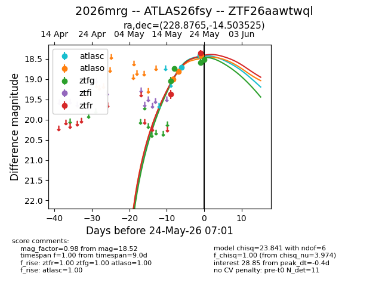
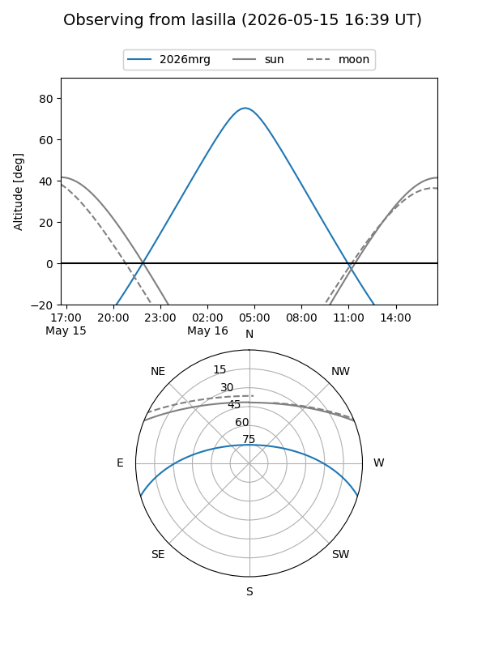
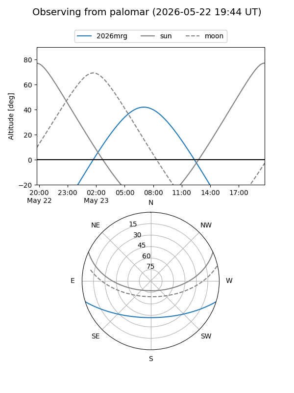
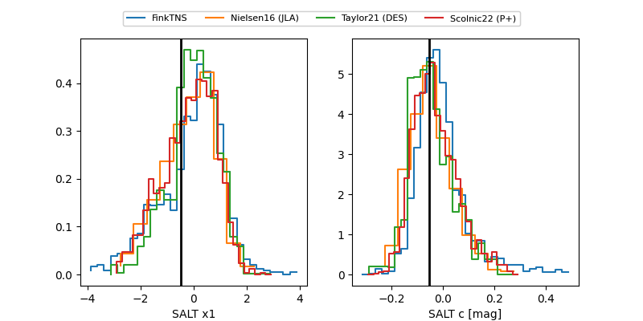

2026mrg
Target 2026mrg at 2026-05-24 07:02
Aliases and brokers:
lsst-FINK: link
lsst-Lasair: link
lsst-ALeRCE: link
ztf-FINK: link
ztf-Lasair: link
ztf-ALeRCE: link
TNS: link
YSE: link
alt names
ZTF26aawtwql (ztf,fink_ztf)
2026mrg (tns,yse)
ATLAS26fsy (atlas)
Coordinates:
equatorial (ra, dec) = 228.8765,-14.50353
equatorial (HMS+DMS) = 15:15:30.35,-14:30:12.69
galactic (l, b) = (347.4001,+35.64233)
Flags:
Photometry:
last atlasc=18.42, atlaso=18.42, ztfg=18.52, ztfr=18.35
2 atlasc, 3 atlaso, 4 ztfg, 2 ztfr detections
Lightcurve

Visibility


Additional plots
